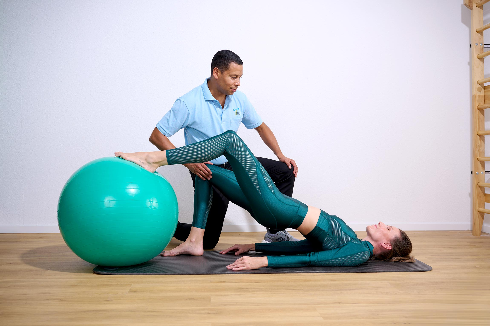

Prävention
Bewegungsanalyse und gezielte Intervention, bevor aus einer Dysbalance eine Verletzung wird.
- Bewegungsanalyse
- Dysbalancen-Intervention
- Mikronährstoffberatung
- Trainingstherapie
1:1-Betreuung für Berufstätige und Sportler, die ihre Leistungsfähigkeit nicht dem Zufall überlassen — volle Behandlungszeit, ein Therapeut, keine Kassen-Warteschlange.

Vorbeugen, wiederherstellen, regenerieren — individuell abgestimmt auf Ihre Belastung im Alltag oder im Training.
Bewegungsanalyse und gezielte Intervention, bevor aus einer Dysbalance eine Verletzung wird.
Strukturierter Weg zurück zu voller Funktion — nach Verletzung, Operation oder chronischer Belastung.
Moderne Erholungstechnik, die Ihrem Körper hilft, schneller wieder belastbar zu sein.
AK Physiotherapie arbeitet bewusst außerhalb des Kassensystems — auf privatärztliche Verordnung oder als Selbstzahler. Das heißt: keine Taktung im Fünf-Minuten-Rhythmus, kein Therapeutenwechsel, keine Wartezimmer-Schlange.
Stattdessen: 45 bis 60 Minuten ungeteilte Aufmerksamkeit, ein Behandlungsplan, der sich an Ihrem Trainings- oder Arbeitskalender orientiert, und Zugang zu Regenerationstechnik, die in einer Kassenpraxis selten zur Verfügung steht.
Sie kommen mit privatärztlicher Verordnung oder buchen direkt als Selbstzahler — beides ist möglich.
Im Erstgespräch analysieren wir Ihre Belastung und erstellen einen individuellen Behandlungsplan.
Regelmäßige Sitzungen mit demselben Therapeuten, abgestimmt auf Ihren Kalender.

Wie sich volle Behandlungszeit und durchgehende Betreuung im Alltag anfühlen.
„Endlich Physiotherapie, die sich meinem Trainingsplan anpasst und nicht umgekehrt.“
Patient, Ausdauersportler
„Volle 60 Minuten, ein Therapeut, spürbarer Fortschritt nach der Schulter-OP.“
Patientin, Reha nach OP
„Termine passen sich meinem Kalender an, nicht der Praxis. Genau das habe ich gesucht.“
Patient, Berufstätiger
Sinngemäße Beispielstimmen — reale, freigegebene Patientenzitate folgen.
Anfragen werden in der Regel innerhalb eines Werktags beantwortet.